Many translations are not accompanied by book titles, they are simply labeled book one book two so on. However the titles given below are similar to ones you would find in translated texts with accompanying titles.
The story opens in the ninth year of the war. A priest of Apollo, Chryses, is pleading with Agamemnon to return his daughter Chryseis. When refused Chryses prays to Apollo, who shoots arrows of plague onto the Achaeans. Calchas the prophet tells Agamemnon he must give the girl back or else the Greeks will lose. Agamemnon bitterly agrees but says he will take Briseis, a woman taken by Achilles as a prize, as compensation. Achilles is held back by Athena and withdraws from the war. Achilles complains to his mother Thetis who tells Zeus to back the Trojans.
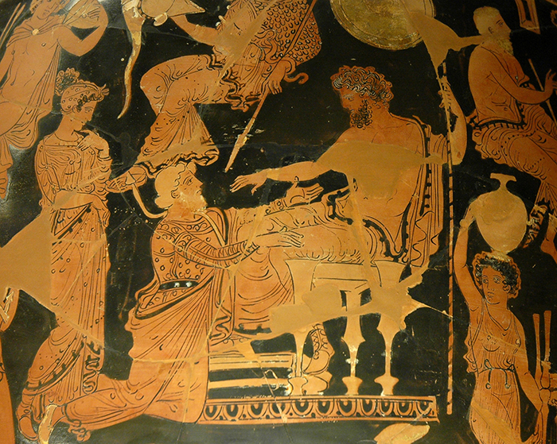The second book acts as an introduction to the most important characters in the Iliad. It is a bit of a drag but also contains important and fun details of the war. Following Thetis' request to fail the Achaeans, Zeus sends Agamemnon a message in his dreams that if he launches a full scale attack on Troy immediately, he will win. Agamemnon jumps up to oblige but first tests his men by telling them to give up the war. Betraying his beliefs, the majority of the Greeks run to their ships to begin preparing to sail back until Odysseus convinces them to come back. After this Homer gives a long list of the Achaeans warriors, then the Trojans
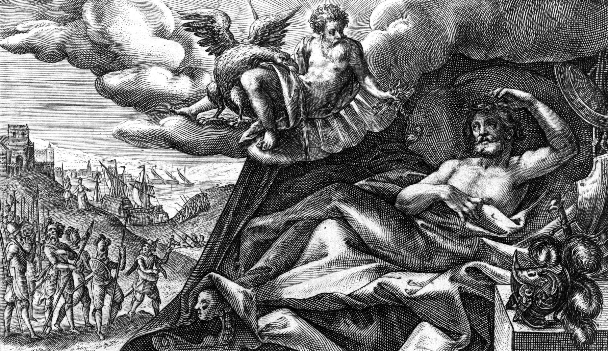Paris marches through the front of the Trojan lines as they begin to fight for the day, claiming he wants to fight. He is scared away when Menelaus eagerly agrees. Hector chastises his brothers cowardice so Paris returns to the battle to offer a duel. Menelaus and Paris will fight to the death and whoever wins will have Helen, meaning the war will end. Helen discusses some of the Achaean warriors with Priam, notably mentioning Greater Ajax, Agamemnon, and Odysseus. Priam then retreats, not wanting to witness Paris’ potential death. The two fight and Menelaus ends up dragging Paris through the dirt and choking him by his helmet strap. Aphrodite flies down and saves Paris, to everybody's dismay. Aphrodite then takes Helen to Paris’ bedroom in which they lie down in bed together while the warriors search for Paris. Agamemnon claims Menelaus as the winner by default.
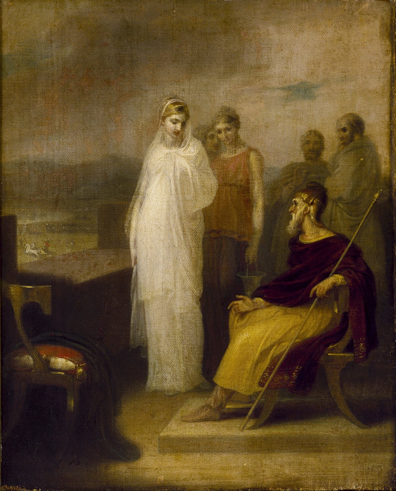The gods discuss the outcome and Zeus declares Menelaus the winner. Hera is angered as she wants to destroy the whole of Troy. Zeus eventually sends Athena out to restart the battle. Athena urges a Trojan soldier to shoot at Menelaus, which she deflects to only wound the man. The fighting resumes.
Diometes is blessed by Athena and is able to see gods disguised as humans. Athena tells him not to hurt any of them aside from Aphrodite. Diomedes ends up shooting Aphrodite through the wrists and lands a weakening blow on Ares.
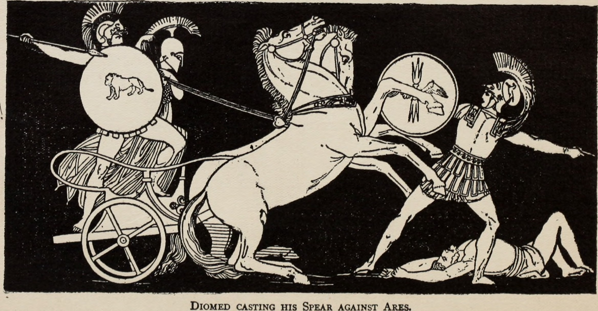Hector returns to Troy to ask the women to pray. He asks where his wife Andromache is and is told she is on the walls of Troy. The two share a sweet moment and Hector raises his baby up to the sky and prays to Zeus that Astyanax will have a better life than his own.
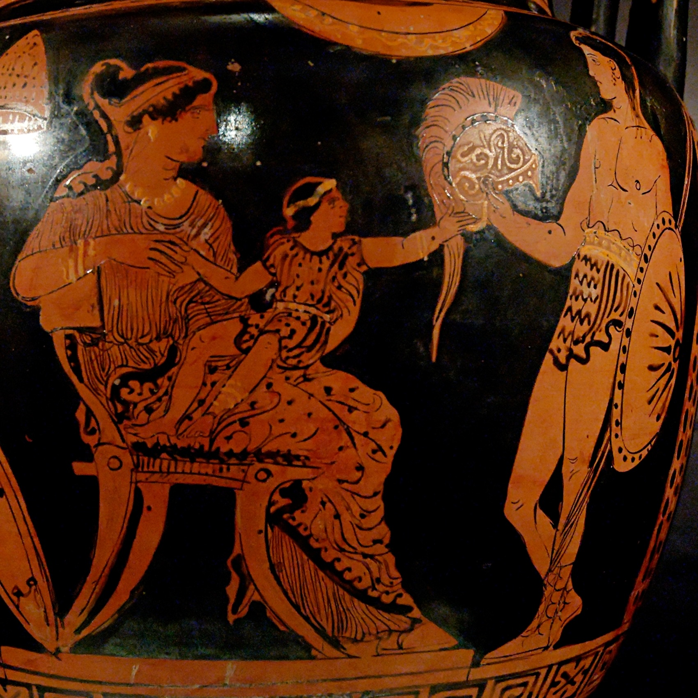Hector and Ajax decide to duel, but after a day of fighting the two decide to stop fighting and allow both sides to bury their dead. A proper burial is seen as a sacred part of death in Ancient Greece.
Zeus declares no more gods are to interfere with the war. The Greeks are pushed back to their wall however when Zeus aids the Trojans himself.
Agamemnon sends Odysseus, Ajax, and Pheonix to try to plead with Achilles to come fight again. They offer him riches and cities however Achilles rejects and says that his troops are preparing ships to return home
Diomedes and Odysseus sneak off to infiltrate a Trojan camp. They run into a Trojan spy attempting the same thing as them and kill him after getting information. The two then slaughter a large part of that Trojan camp.
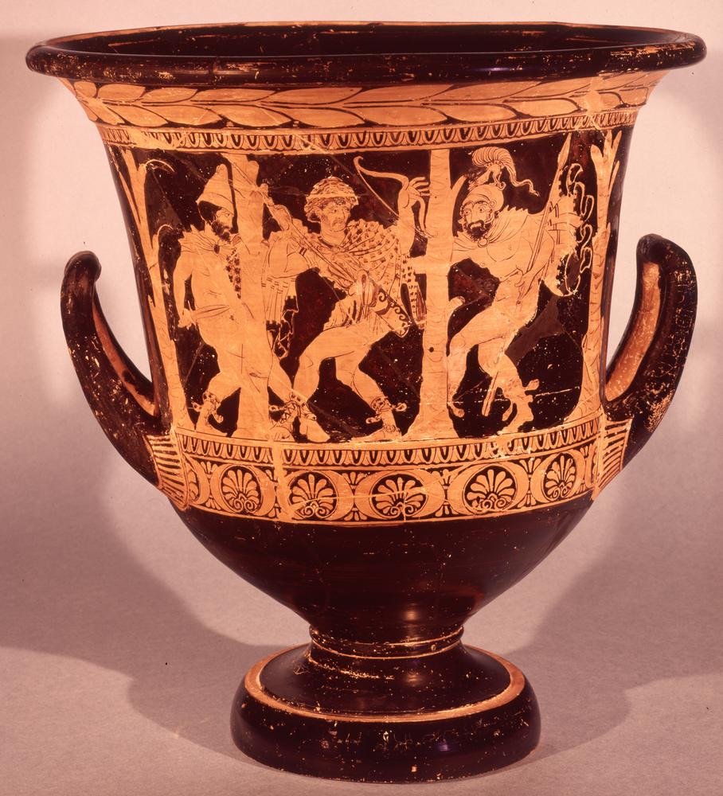Agamemnon fights valiantly but is wounded alongside many other men. Upon hearing Achilles sends Patroclus to check on the wounded and see who they are.
Led by Hector's bravery, the Trojans manage to push the Greeks back to their ships.
Poseidon comes out to help the Greeks and they are able to push the Trojans back.
To further the Greeks, Hera seduces her husband Zeus to keep him from the Trojans. While he is distracted Poseidon is able to continue helping the Greeks and they stand their ground.
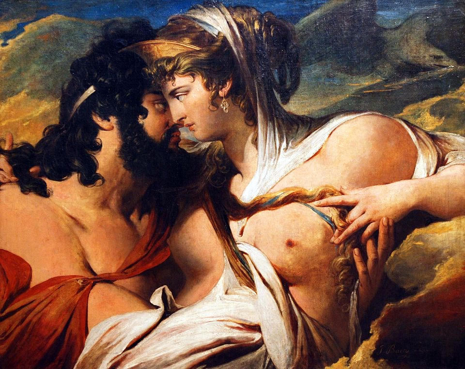Repetitively, Zeus realises Hera’s deception and aids the Trojans to push the Greeks back to the ships
Achilles gives Patroclus his armor and the man fights under the guise of being Achilles. Raising morale and pushing the Achaeans forward. Patroclus is then killed by Hector.
Patroclus’ body is fought over. The Trojans attempt to take it and prevent his proper burial, but Menelaus and Ajax are able to retrieve Patroclus’ body.
Achilles is heartbroken. His mother Thetis asks Hephestus to forge a new set of armour. Achilles storms into battle for revenge.
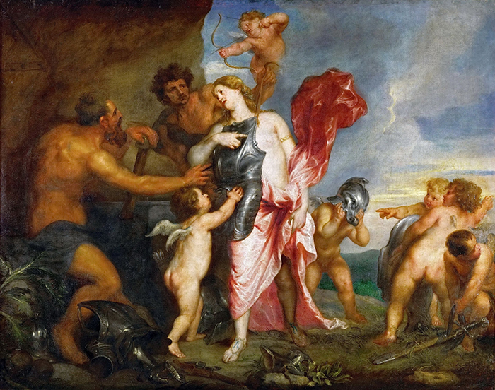Briseis discusses Patroclus’ death somberly while Achilles and Agamemnon rekindle. Achilles rejoins the war.
In response to this, Zeus allows the gods to re-enter the war. The gods begin aiding their respective sides while Achilles slaughters the Trojans in devastation for Patroclus’ murder.
Achilles is able to drive the Trojans all the way back to the walls. Slaughtering so many in the river that the river god comes down to fight Achilles for the disrespect, Achilles also beats the god.
Hector and Achilles duel and Hector is killed. Achilles then parades Hector's corpse by tying him to the back of a wagon and dragging him around the walls of Troy three times.
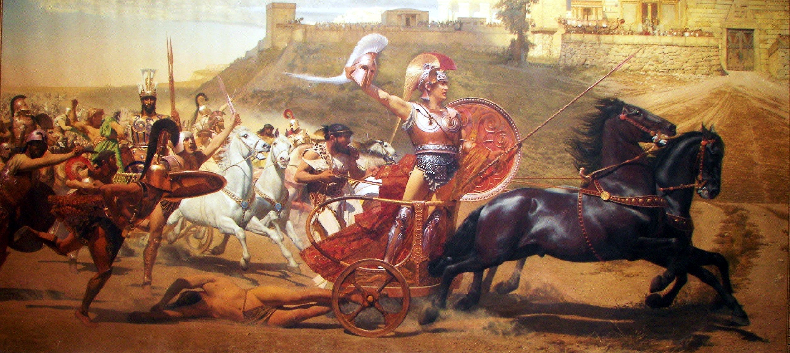Achilles and the Achaeans give Patroclus a proper and glorious cremation ceremony. Then they participate in funeral games in Patroclus’ name.
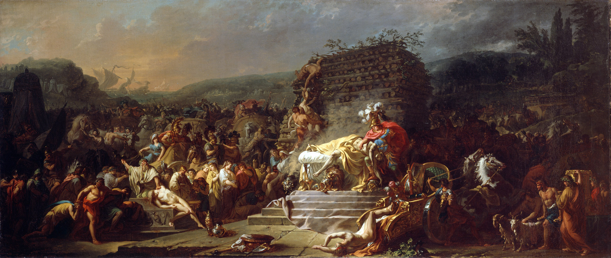A truce is drawn after Priam visits Achilles and begs for Hector's body back to give his son a proper burial like Patroclus’. Achilles agrees after lot’s of begging.
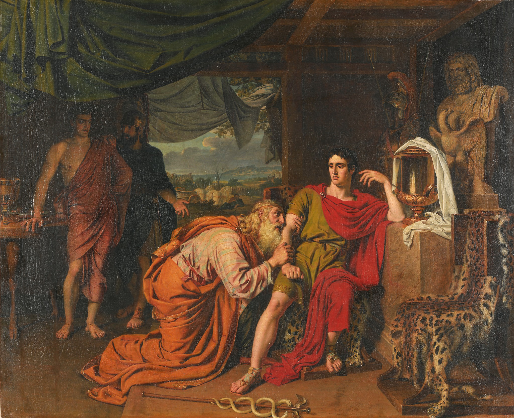